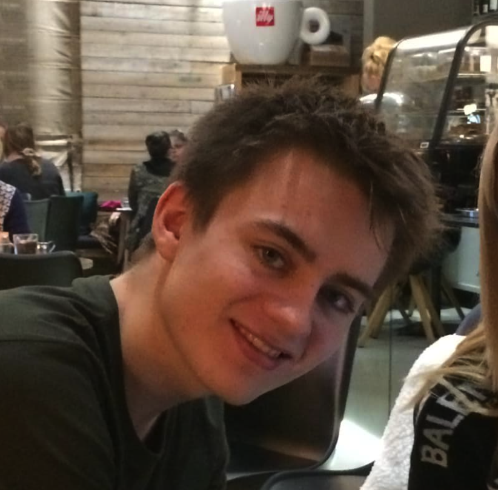

Multimediedesigner med speciale i UI/UX og webudvikling. Jeg arbejder med både design og kode, med stor fokus på hvordan AI forandrer måden vi bygger digitale produkter på — og hvordan det kan udnyttes til at skabe bedre løsninger, hurtigere.

Fire områder jeg arbejder med dagligt — fra klassisk UI/UX til agent-systemer der bygger software sammen.
Wireframes, prototyper og interfaces med skarpt blik for detaljen. Smooth flows og æstetik der hænger sammen fra første klik til sidste. Design der ser lækkert ud — og fungerer lige så godt.
Primær specialiseringJeg bygger websites og webapps med moderne tech, hvor I selv ejer domæne og kode bagefter. Jeg udvikler løsninger, der ikke bare ser godt ud, men også performer hurtigt, er skalerbare og skabt med brugeroplevelsen i centrum.
KerneområdeMulti-agent systemer er et af mine fokusområder, som jeg i stigende grad integrerer i mine workflows: autonome agenter, der samarbejder, løser opgaver og reelt udvikler software sammen.
Personlig passionDet store billede bag AI-systemer — hvordan agenter snakker sammen, deler hukommelse, håndterer fejl og skalerer uden at det hele vælter.
Hobby & udforskningHjemmeside til en professionel konsulentvirksomhed. Hele siden er designet og bygget af mig — fra layout og branding til den endelige kode.
Chromium extension jeg byggede for at gøre nye faner faktisk brugbare. Custom widgets, mørkt tema, og et interface der ikke er irriterende at kigge på 50 gange om dagen.
Webdesign hvor hele processen til færdigt produkt er lavet med AI som en integreret del af workflowet. Responsivt, hurtigt, og med et moderne visuelt udtryk.
Wireframes, mockups, og prototyper — hele vejen fra første idé til det endelige design. Herunder kan du se min proces og downloade de originale filer.
Photoshop, Lightroom, teksturer, retuche, compositing — det hele. Alt fra baggrundsteksturen på denne side til professionel fotoredigering.
Portrætter, produktbilleder, og kreative composites. Photoshop har været mit primære værktøj i næsten to årtier.
Håndlavede teksturer, mønstre og grafiske elementer. Baggrunden på denne side? Tegnet i hånden og efterbehandlet i Photoshop.
Lightroom og Camera Raw til farvegradering, eksponering og toning. Giver alle billeder et konsistent og professionelt look.
En live-visning af mit faktiske 21-agent AI-team - de bevæger sig kun når de rent faktisk giver hinanden opgaver og er i gang med at bygge browseren. Systemet 'bagved' er bygget på OpenClaw + Custom GEPA-arkitektur med avanceret memory, sandboxed security og self-improvement loops.
Dette er IKKE en demo — men et live overblik over mine agenter.
Temaet er fra mit personlige Dashboard jeg bruger til at styre mine Agenter.